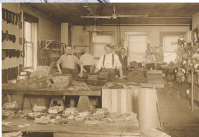
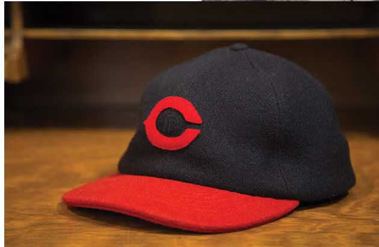
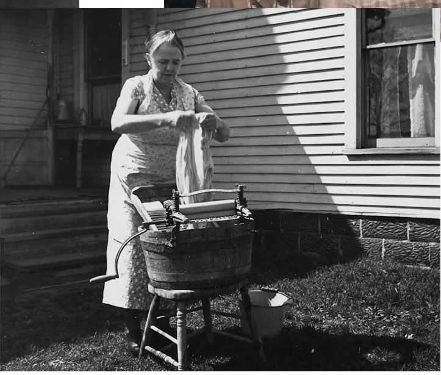
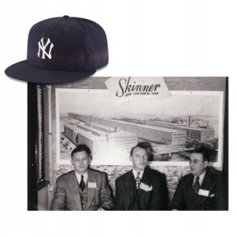
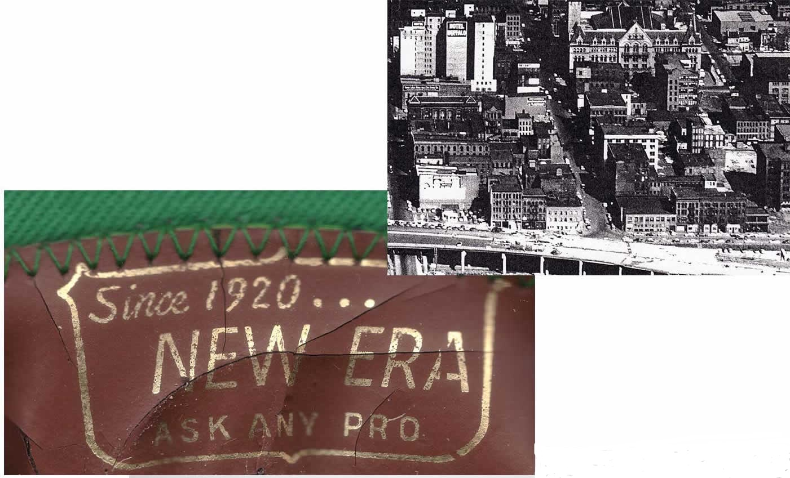
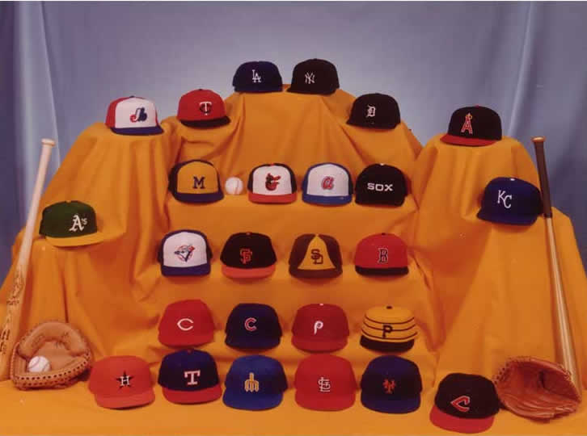

EVOLUCION DE NEW ERA
Los 20 - SE CONSTRUYERON LOS CIMIENTOS
El inmigrante alemán, de 37 años, Ehrhardt Koch, vio una oportunidad con sus grandes habilidades artesanales para rediseñar el proceso y la calidad de la moda del headware. En 1920, su sueño se hizo realidad, cuando pidió dinero prestado a su hermana Rose para abrir New Era Cap Co. Su experiencia y visión lo llevaron a crear la compañía que produjo 60 mil boinas gatsby el primer año.
 Pocas épocas en el béisbol son tan recordadas como la de los 20’s. Los Yankees de Nueva York se adueñaron del imaginario de la gente gracias a figuras como Babe Ruth, provocando que el beisbol se consolidara como el pasatiempo favorito de los Estados Unidos.
Los 30 - UN GIRO AL ESTILO
Aprovechando el momento, Harold –hijo de Ehrhardt– decidió darle un giro a la empresa y producir gorras de beisbol. Bajo el lema “la calidad es primero, la cantidad viene sola”, en 1934 la marca fabricó la primera gorra New Era de beisbol profesional para los Cleveland Indians, quienes la portaban jugando tanto en casa como en parque ajeno.
Los 40 - PERSISTENCIA
La época de la Segunda Guerra Mundial fue dura y para New Era no fue la excepción. Nuestra fábrica estaba en peligro, pero los Koch fueron habilidosos, obtuvieron excedentes y telas sencillas del distrito de la indumentaria en Nueva York. De hecho, las telas que se usaron para fabricar gorras durante esta época fueron teñidas en la lavadora de la casa de la familia para igualar los colores de los equipos locales.
Los 50 - NACE UN ICONO
Para 1950, New Era era el único fabricante de gorras independiente, proveyendo gorras a los equipos de las Ligas Mayores. Su lista de clientes incluía a casi todos los equipos del momento, como los Brooklyn Dodgers®, los Cincinnati Reds®, los Cleveland Indians® y los Detroit Tigers®. En 1954, Harold diseñó el estilo de gorra New Era cerrada 59FIFTY, encontrando un estilo más contemporáneo.
Los 60 – APLANANDO EL CAMINO
Para manejar bien el crecimiento de la compañía, Harold, ahora al cargo, abrió nuestra fábrica en Derby, New York, cerca de la casa de la familia. Esta instalación se convertiría en la que exclusivamente fabricaría la icónica gorra 59FIFTY®. Una vez demostrada nuestra capacidad, la MLB invitó a New Era para vender directamente a los equipos en la reunión anual Winter Meetings. Esto fue fundamental para que la marca terminara siendo exclusiva de la Liga.
Los 70 - LA SIGUIENTE GENERACIÓN
En 1972, el hijo de Harold, David, fue nombrado presidente (14 años después de empezar a trabajar en la empresa). Unos años después, Chris Koch (nuestro actual CEO), hijo de David, continuó la tradición y empezó a trabajar en la fábrica de Derby para su abuelo y su padre.